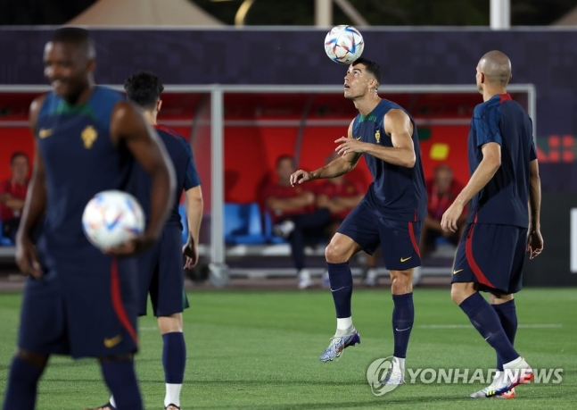
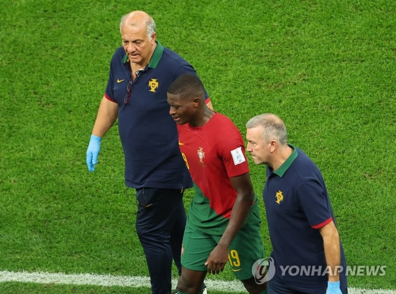
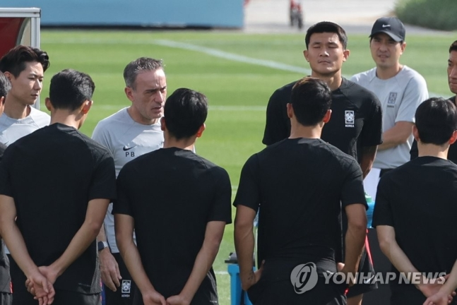

(도하=연합뉴스) 장보인 기자 = 벤투호의 2022 카타르 월드컵 조별리그 마지막 상대인 '강호' 포르투갈에도 빈틈은 있다. 수비수들의 부상으로 생긴 공백이 태극전사들에겐 돌파구가 될 수 있다. 파울루 벤투 감독이 이끄는 한국 축구 대표팀은 한국시간으로 3일 0시 카타르 알라이얀의 에듀케이션 시티 스타디움에서 포르투갈과 카타르 월드컵 조별리그 H조 최종 3차전을 치른다. 포르투갈의 국제축구연맹(FIFA) 랭킹은 9위로, H조 4개 팀 중 가장 높다. 한국은 28위다. 조별리그에서도 포르투갈은 가나(61위)를 3-2, 우루과이(14위)를 2-0으로 제압하며 2연승으로 3차전 결과와 상관없이 16강 진출을 확정했다. 우루과이와 0-0으로 비긴 데 이어 가나에 2-3으로 덜미를 잡힌 한국은 마지막 3차전에서 가장 강력한 상대인 포르투갈을 넘어야 16강의 희망을 이어갈 수 있다. 포르투갈을 꺾고 승점 3을 챙긴 뒤에 같은 조 가나(1승 1패)-우루과이(1무 1패)전의 결과를 지켜봐야 한다.
크리스티아누 호날두(무소속), 브루누 페르난드스(맨체스터 유나이티드), 주앙 펠릭스(아틀레티코 마드리드) 등 강력한 공격진을 보유한 포르투갈은 객관적인 전력에서 한국에 앞선다. 포르투갈 국가대표 출신으로 대표팀 사령탑까지 지냈던 벤투 감독도 "포르투갈 역사상 가장 막강한 팀이지 않을까 생각한다"고 전력을 평가했다. 여기에 포르투갈은 16강에 오르고도 조 1위를 사수하기 위해 한국전 '총력전'을 예고한 상태다. '괴물 수비수' 김민재(나폴리)가 부상 여파에 시달리는 가운데, 한국은 포르투갈의 날카로운 공격을 막기 위해 힘겨운 싸움을 해야 한다. 그러나 포르투갈의 일부 선수가 부상으로 경기에 나설 수 없다는 점은 한국에 그나마 다행스러운 부분이다. 조별리그를 치르며 수비수 다닐루 페레이라와 누누 멘드스(이상 파리 생제르맹), 미드필더 오타비우(포르투)가 다쳤다.
특히 수비형 미드필더와 센터백을 소화하는 페레이라는 1차전 이후 훈련 중 갈비뼈 골절로 남은 경기를 포기하게 됐고, 왼쪽 측면 수비수 멘드스는 우루과이와 2차전에서 전반 42분 허벅지 부위 통증을 호소하며 교체 아웃됐다. 멘드스는 더는 뛸 수 없다는 것을 깨달은 듯 눈물을 쏟으며 그라운드를 벗어났고, AFP 통신 등에 따르면 그는 내년 1월 말까지 결장할 것으로 보인다. 이들의 빈자리를 채울 하파엘 게헤이루(도르트문트), 후벵 디아스(맨체스터 시티) 등이 버티고 있기는 하지만, 한국은 포르투갈의 측면을 노려야 한다. FIFA 데이터 플랫폼에 따르면 한국은 우루과이전을 치를 때 파이널 서드 지역에서 오른쪽(45％), 왼쪽(36％) 측면을 파고드는 빈도가 높았다. 가나전에서도 한국은 측면을 적극적으로 공략했다. 이강인(마요르카)과 김진수(전북)가 왼쪽 측면에서 올린 크로스가 모두 조규성(전북)의 득점으로 연결되기도 했다. 포르투갈전에선 측면을 활용한 공격이 더 활발하게 이뤄져야 하는 것은 물론, 공격의 완성도까지 높이는 게 과제다.
현재 오른쪽 측면에서 왕성한 활동량을 보이는 나상호(서울)에, 햄스트링 부상을 딛고 팀 훈련을 소화하고 있는 황희찬(울버햄프턴)까지 돌아온다면 추진력을 얻을 것으로 보인다. 다만 벤투 감독은 "황희찬이 트레이닝을 하고는 있지만, 포르투갈전에 출전할지는 확실히 말씀드릴 수는 없다"고 전했다. 황희찬이 출전하지 못하더라도 '황금 왼발'을 자랑하는 이강인, 직전 경기 멀티골을 기록한 조규성 등의 활약도 주목할만하다.